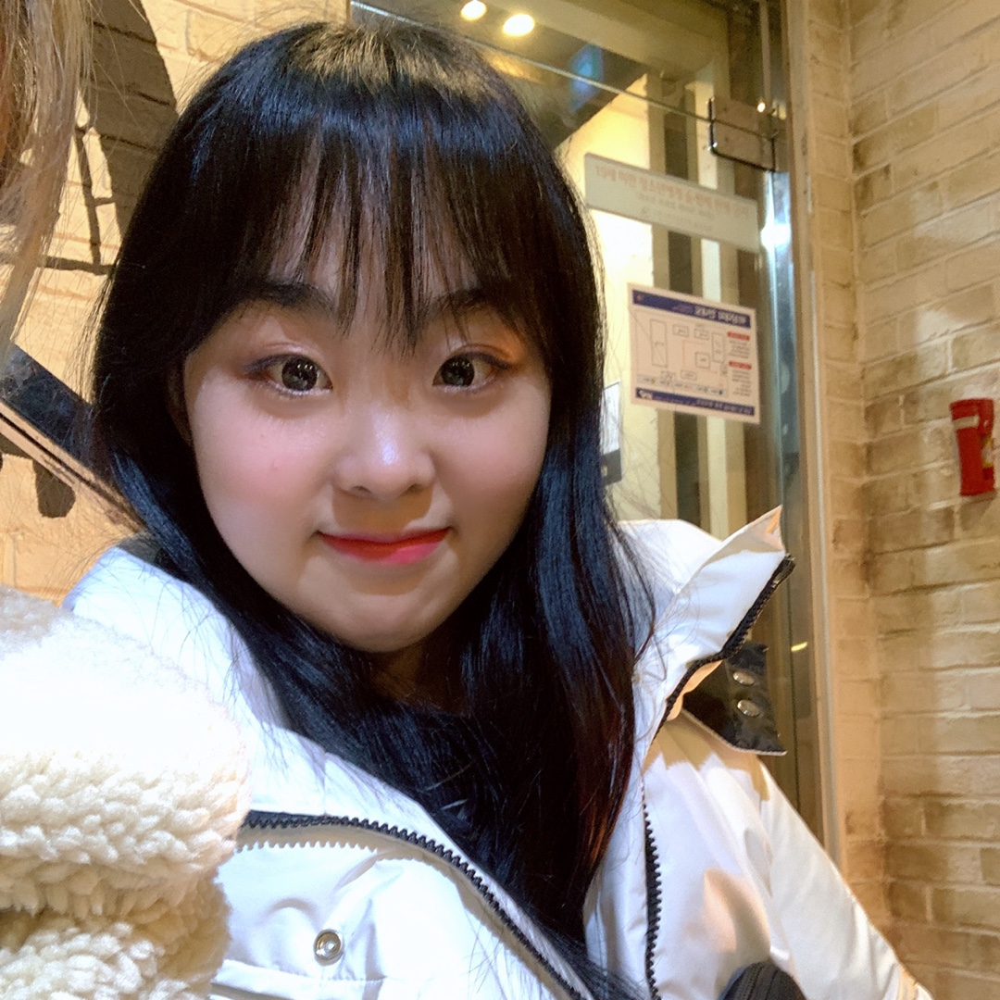
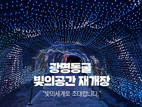
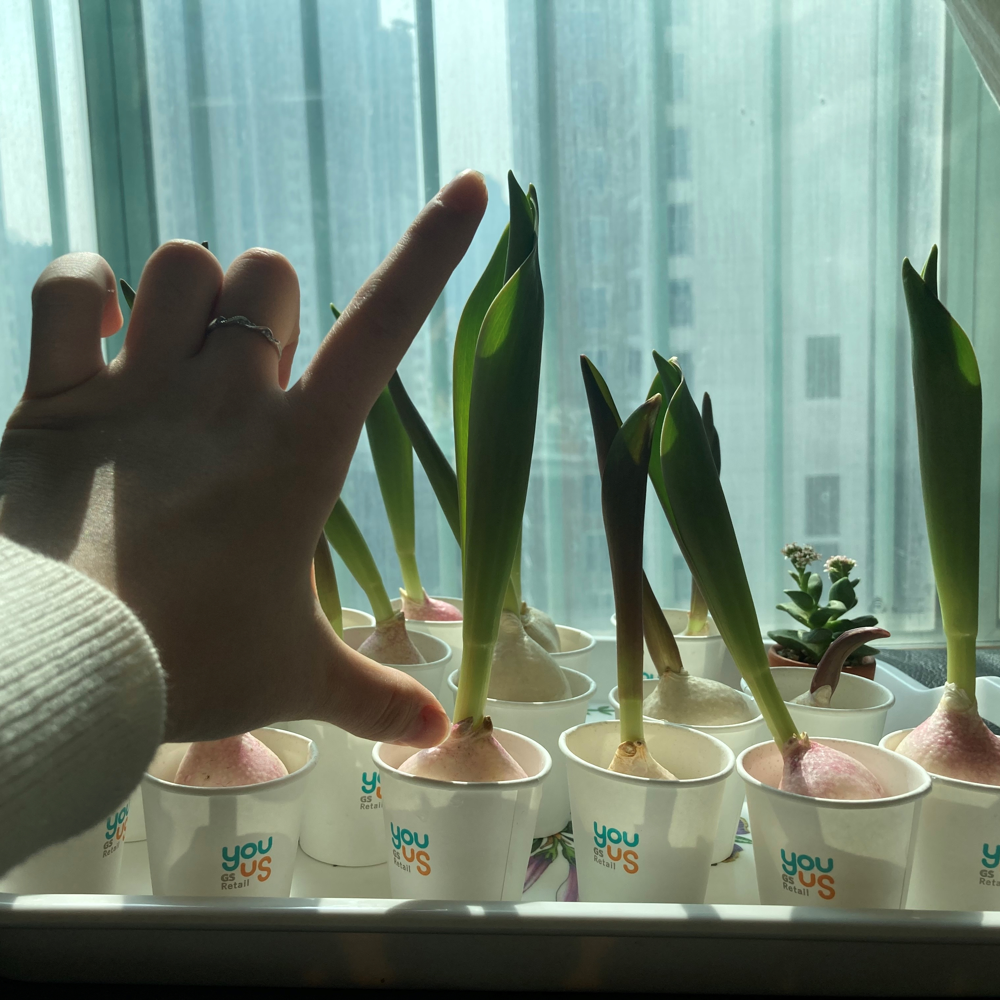

박시연 자기소개서
목차
- 인적사항
- 자기소개
- 시간표
- 취미
- 아르바이트 경력
- 좋아하는 시
- 편지 - 윤동주
- 이별은 미의 창조 - 한용운
- 바다와 나비 - 김기림
- 키우고있는 식물 : 튤립 관찰일지
- 튤립 수경재배 11일차
- 튤립 수경재배 17일차
인적사항
자기소개
- 
- 이름 : 박시연
- 생일 : 2월 14일 물병자리
- 전공 : 프랑스어학부 FATI전공
(클릭하여 프랑스어학부 FATI전공 홈페이지로 이동)
이번 학기 시간표
| 월 | 화 | 수 | 목 | 금 | |
|---|---|---|---|---|---|
| 1 | 한불통번역 입문 |
고급프랑스어 텍스트강독 |
|||
| 2 | |||||
| 3 | 컴퓨팅사고 | ||||
| 4 | 웹프로그래밍 | ||||
| 5 | 프랑스어듣기 발음연습 |
||||
| 6 | |||||
| 7 | 알고리즘 | 운영체제 | |||
| 8 | |||||
| 9 |
취미
- 문학 감상>>클릭하면 해당 챕터로 이동
- 식물 재배>>클릭하면 해당 챕터로 이동
아르바이트 경력
| 할리스 커피 ↑사진을 클릭하여 할리스커피 홈페이지로 |
광명동굴 매표소  ↑사진을 클릭하여 광명동굴 홈페이지로 |
코엑스 아쿠아리움 안내파트 |
좋아하는 시
편지 - 윤동주
누나!
이 겨울에도
눈이 가득히 왔습니다.
흰 봉투에
눈을 한 줌 넣고
글씨도 쓰지 말고
우표도 붙이지 말고
말쑥하게 그대로
편지를 부칠까요?
누나 가신 나라엔
눈이 아니 온다기에.
이별은 미의 창조 - 한용운
이별은 미의 창조입니다.
이별의 미는
아침의 바탕 없는 황금과
밤의 올 없는 검은 비단과
죽음 없는 영원의 생명과
시들지 않는 하늘의 푸른 꽃에도 없습니다.
님이여
이별이 아니면
나는 눈물에서 죽었다가
웃음에서 다시 살아날 수가 없습니다.
오오 이별이여.
미는 이별의 창조입니다.
바다와 나비 - 김기림
아무도 그에게 수심을 일러준 일이 없기에
흰 나비를 도무지 바다가 무섭지 않다.
청무우밭인가 해서 내려갔다가는
어린 날개가 물결에 절어서
공주처럼 지쳐서 돌아온다.
삼월달 바다가 꽃이 피지 않아서 서글픈
나비 허리에 새파란 초생달이 시리다.
키우고있는 식물 : 튤립 관찰일지

심은 날로부터 11일째,
붉던 싹이 푸르게 변했고, 마치 대파처럼 위로 잎과 줄기가 쑥쑥 자라 벌써 한 뼘까지 자랐다.

심은 날로부터, 17일째,
하나로 뭉쳐있던 잎들이 펼쳐지기 시작했으며, 길이는 무섭게 쑥쑥 커서 어느덧 24cm가 되었다.